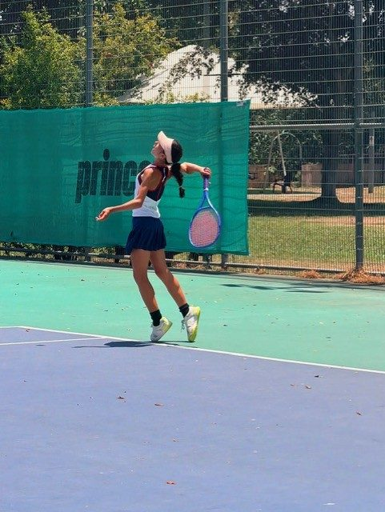

Free youth tennis · Led by Maya Keller
A place for
every kid to play.
For two years, nationally ranked junior player Maya Keller has volunteered her time and expertise teaching tennis for free to Jewish kids and to any kids from disadvantaged backgrounds who deserve a chance to play.
Jewish-founded. Open to everyone. Always free to attend.

Everyone is welcome.Sundays, 6–8 PM · Glenview, Illinois
#13Midwest ranking in her age division
#125National ranking in her age division
Silver medalDoubles · Maccabiah Games, Tel Aviv 2026
2 yearsTeaching kids tennis, completely free
Explore
Get to know Maya and the program.
A nationally ranked player who gives her time back to the next generation of players.

Pick up a racket. Find your people.
There is room for you on the court.
Join Maya on Sundays from 6–8 PM at Ridge and Valley Tennis Club in Glenview, Illinois. Kids and teens of every background are welcome, and it is always free.
See class details